Central Gazette Name & Gender Change Guide
This guide explains the process of legally changing your name and gender through the Central Gazette in India.
Start Document Generator (OFFLINE VERSION ALSO AVAILABLE)→ Wanna do State Gazette instead? →What is Gazette?
A Gazette is an official government publication used to notify the public regarding laws, policy changes, and personal legal changes such as name change.
Under the Transgender Persons (Protection of Rights) Act, 2019, the Department of Publication introduced a process to legally publish gender transition and name change notifications in the Central Gazette.
How Gazette Publication Usually Works (Simple Explanation)
A Gazette notification is basically a public government announcement saying:
The Government does not automatically update all your documents after Gazette publication.
Instead, the Gazette acts as an official public record which you can later use to update:
- Aadhaar
- PAN
- Passport
- Bank records
- Educational certificates
- Employment records
- Other government documents
The process usually works like this:
- Create supporting documents and affidavit
- Publish newspaper advertisement
- Submit Gazette application
- Government verifies documents
- Your notification gets published in a weekly Gazette PDF
- You later use that publication for updating other documents
This guide exists to simplify that entire process step-by-step.
Prerequisites
- 18 years or older
- GD/GID letter from registered medical practitioner
- Valid phone number
- Valid email ID
- Identity proof
- Address proof
- Sufficient funds for processing and travel/postal expenses
Modes of Application
1. Via Post
No travel required. Slower processing. Errors are harder to rectify.
2. In Person (HIGHLY RECOMMENDED)
Faster and more reliable, but requires travel to Delhi.
3. Agents
Convenient but expensive and risky. Most agents themselves use post mode.
Creation of Supporting Documents
Affidavit
Create or purchase an E-Stamp paper. there are many E-Stamp shops everywhere, go to one and instruct them to make a article 4 affidavit.
1. Give them the DETAILS as:
First party = Deadname
second party = not available(N/A)
stamp duty paid by = Deadname
2. Print or get it printed at the e-stamp shop, USE/Give the affidavit Matter DOCX generated to the E-stamp shop so they Over-Print the Matter on-to the empty place of the newly made E-stamp paper.
3. Get witness signatures.
4. Notarize it with sign, seal and file entry. Attach passport size photo if required.
Notary
Visit any practicing notary advocate. Ensure sign, seal and register/file entry are done properly.
Affidavit Reference Image (without notary seals)
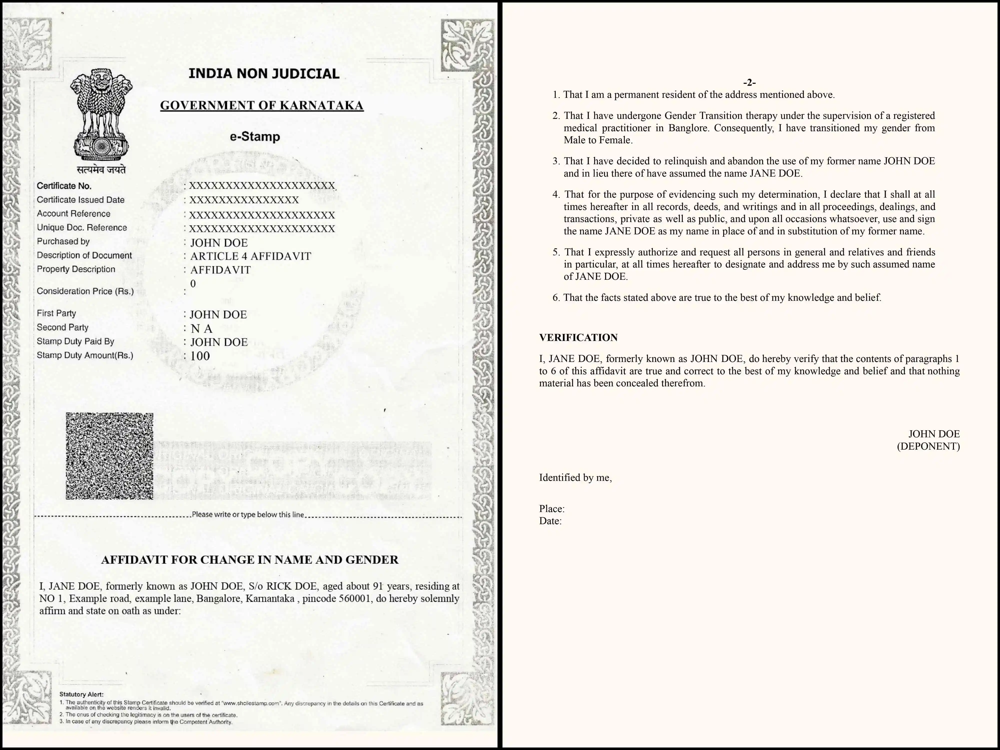
Newspaper Advertisement
One English or Hindi national daily newspaper is generally sufficient.
Use the exact public notice format generated by the tool.
Recommended newspapers include The Economic Times and other widely circulated editions.
Preserve multiple physical copies safely for future updates such as Passport.
Example Advert
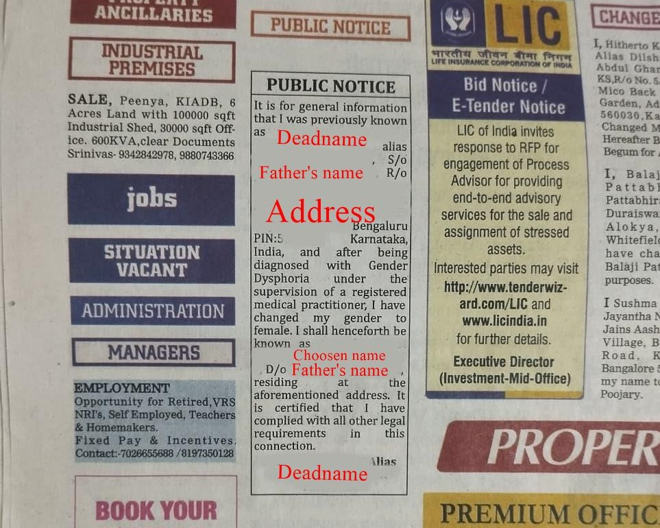
Guide for The Economic Times
Visual guide for Placing ad
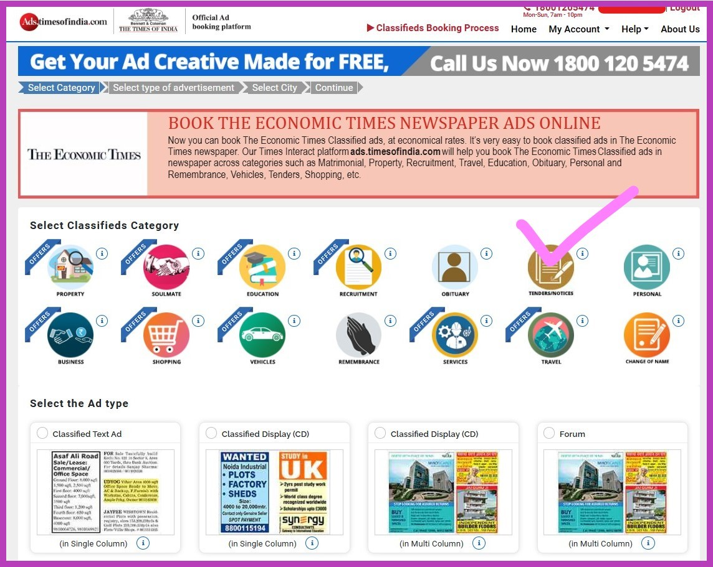
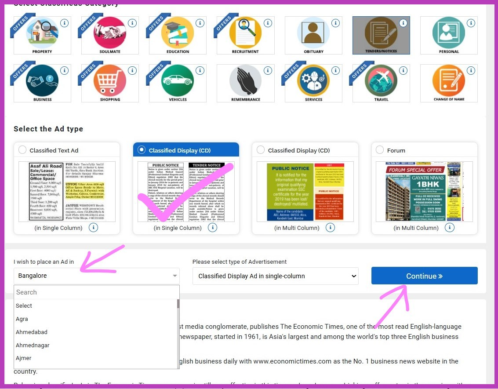
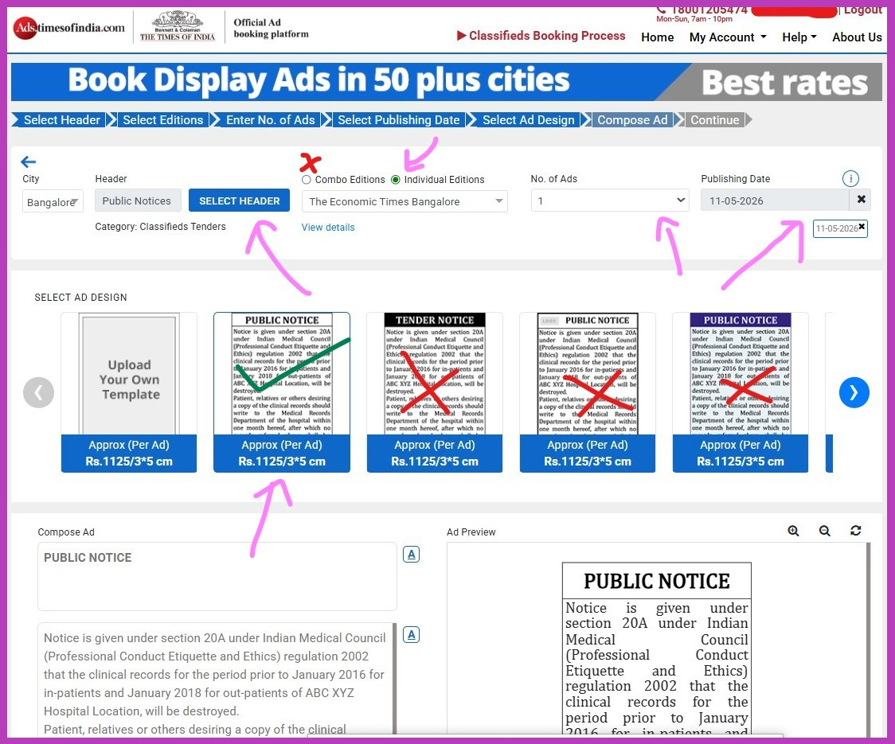
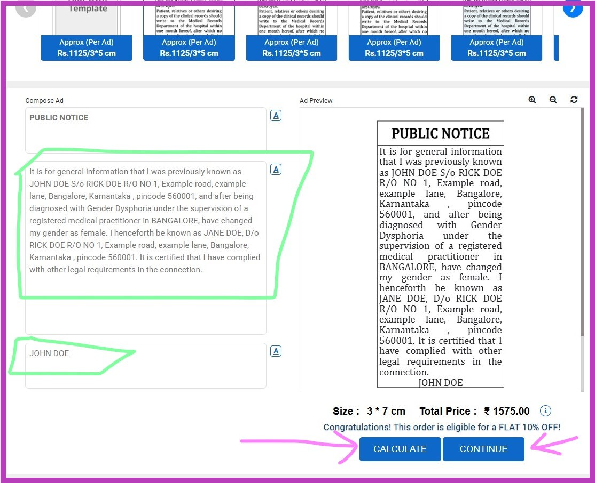
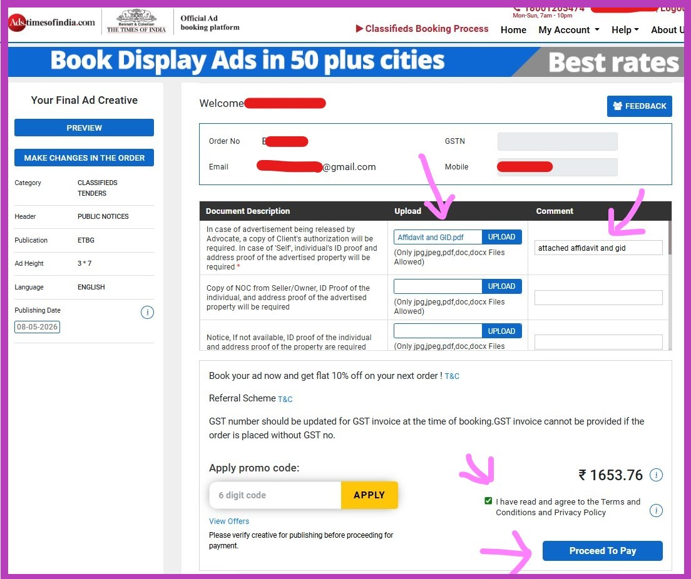
Use a recommended newspaper like Economic Times. You can book an online advertisement here:
Booking Steps:
Book commercial ads
→ Select category: Tenders and Notices
→
Select type: Display Ad Single Column
→
Select ad design & city
→
"I wish to place ad in": Choose your District/City
→ Continue
If prompted, sign in (use your dead name so invoice matches).
Header: PUBLIC NOTICE
→
Select individual editions
→ Choose Economic Times (CHOOSEN CITY)
→
Number of ads: 1
→
Publishing date: choose carefully (plan physical copy collection)
Compose ad:
- Box 1: PUBLIC NOTICE
- Box 2: Text from generator tool
- Box 3: Full dead name
Preview will appear
→ Click Calculate
→ Continue
→
Click Ad Preview
→ Download preview PDF
→
Check "I hereby approve..."
→ Proceed
Final checkout:
- Upload Affidavit + GID letter
- Comment: "attached affidavit and gid"
- Apply promo code (if any)
- Proceed to payment
You will receive communication via email. If there are issues, they will contact you via call/email. Make sure to check cancellation terms if needed.
Collecting Physical Copies
Before placing the advert, ensure the newspaper edition is available locally. Contact newspaper vendors or distributors a day before and reserve 5–6 copies.
No need to mention purpose—just request extra copies. Collect from agency office if required, or gather from multiple newsstands.
Coordinate with local newspaper vendors or agencies beforehand to reserve copies.
Burning CD
Use a blank CD (not DVD). Burn only the DOCX content generated by the tool.
Cyber cafes and xerox shops can usually perform CD burning if you do not own a CD writer.
CD matter example
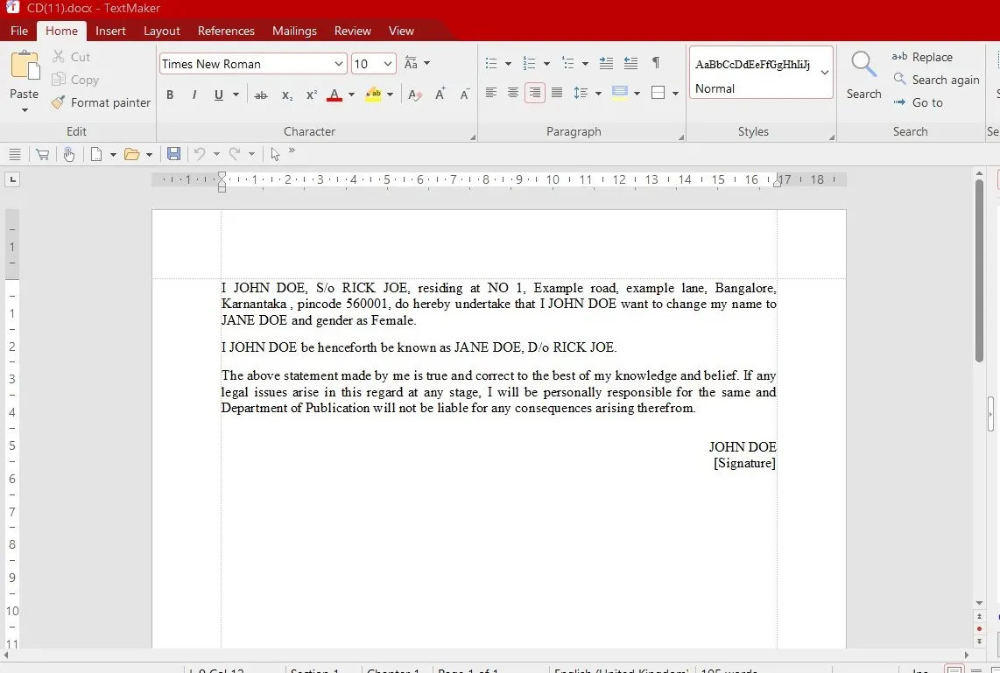
Print Generated PDF Main Documents Bundle
Print all generated PDFs in A4 format including:
- Undertaking
- Self Declaration
- Request Letter
- CD Certificate
Photocopy of All Originals
Take black and white photocopies of all relevant documents such as:
- Aadhaar
- PAN
- Passport
- 10th Marks Card
- GID Letter
- Affidavit
- Medical Intervention Certificates
- Newspaper Advertisement
Witnesses
Witnesses must sign on Undertaking, Self Declaration and Affidavit where applicable.
Self Attest
Sign and date photocopies before submission.
Reference Image
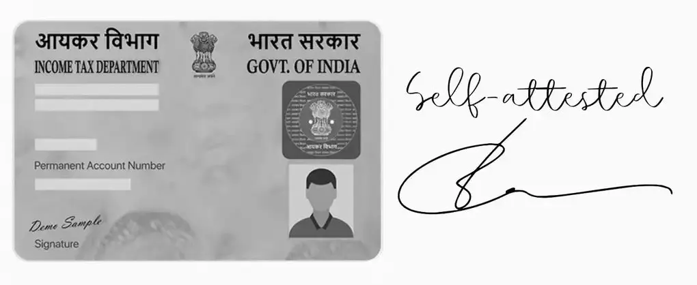
Apply via Post
Full Workflow
1. Pay and Print Tax Challan on BharatKosh
BharatKosh Payment Guide
Generate and pay Gazette publication fees through the BharatKosh portal, then print and save the challan/payment receipt PDF.
Portal:
https://bharatkosh.gov.in/
-
Open the BharatKosh portal and select:
Quick Payment / Non-Registered Users -
Under Depositor's Category, select:
Individual -
In the Purpose section:
- Click the magnifying glass/search icon
- A popup window will open
-
Inside the popup:
-
Under Ministry, select:
Ministry of Housing and Urban Affairs -
In the Purpose search box, type:
sale of gazette - Select the highlighted search result and press Search
- Click the blue highlighted text
-
Under Ministry, select:
-
Under Drawing & Disbursing Office (DDO), select:
Controller of Publication, New Delhi -
Enter the payment amount:
- ₹1400 base fee
- + ₹250 per alias (if applicable)
-
In the Remarks field, enter:
Name and Gender change - Enter the captcha and press Add
-
After the payment entry appears in the list, press:
NEXT -
Enter your full personal details and press:
NEXT -
Select:
Online Payment
then press:
Pay -
After successful payment:
- Save the Acknowledgement Number
- Download and save the Payment Receipt PDF
- Print the receipt for your Gazette application packet
Please select the appropriate Ministry from the dropdown menu while searching for the Purpose.
Reference Image
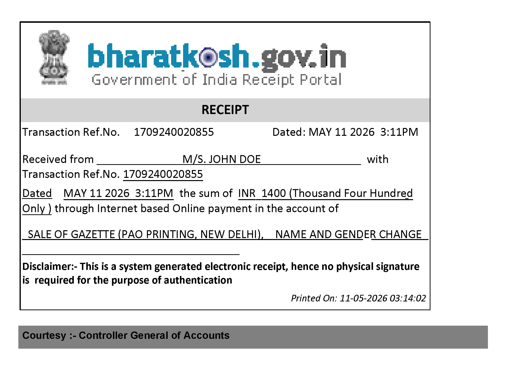
2. Enclose Everything in Envelope
Arrange all original supporting documents, photocopies, CD, challan and generated forms neatly.
Only a A4 Clothline Envolope should be used, Do not use other type as can break in transit.
TOP of the Application file.
1-Request letter (two passport size photos stapled and signed over-top right corner)
2-Bharatkosh payment printout
3-Public Notice
4-Photocopy of GID (Self Attested)
5-Photocopy of Other Medical documents (Self Attested)
6-Photocopy of Aadhaar (Self Attested)
7-Photocopy of PAN (Self Attested)
8-Photocopy of Other ID proof (Self Attested)
9-Original Affidavit
10-Original Newspaper Advert only 1 Page folded (Circle the advert in pen)
11-Photocopy of the Affidavit (Self Attested)
12-Undertaking
13-Public notice
14-Burned CD Inside Hard case and cover (Make sure to use 2 layers of bubble wrap)
15-CD Certificate
^ BOTTOM of the Application file.
3. Use the Posting Label Generated by Tool
Print and paste generated postal label onto envelope.
4. Submission at Any IndiaPost Office
Submit via IndiaPost's Speed Post ONLY and preserve tracking/number slip safely.
Apply in Person
Full Workflow
Plan Trip to Department of Publication, Delhi
Plan accommodation, travel and document organization before arriving.
Premises
Map


Queue
Arrive early morning to reduce waiting time.
7AM Token que, since they issue only 200 tokens a day, its best to arrive very early.
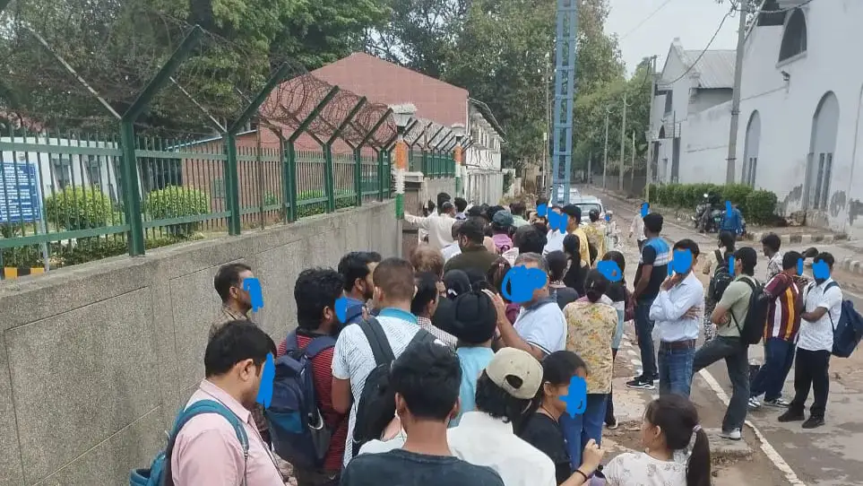
Issuing tokens is quick, so please sit in the numbered chairs while line moves. do not leave this que as youll loose the oppurtunity to get tokens.
Once 200 tokens are issued, they call from num 1. 10AM to 1PM they service 100 tokens and 2PM to 4PM they service rest 100 tokens.
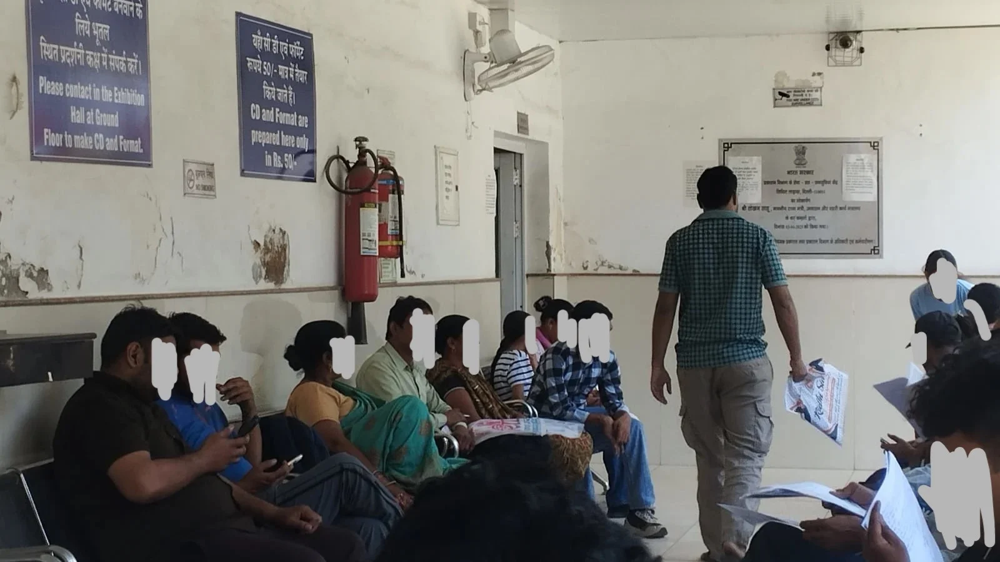
The door on the left is the service hall, you would see more chairs for waiting inside (WITH AC).
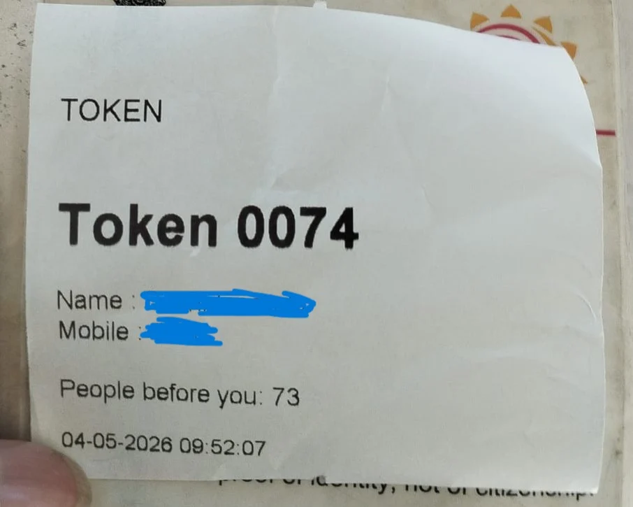
Do Not loose your token as its very important until the payment.
Verification
Officials verify originals, photocopies and generated documents, sign thier name and send you off to payment.
Payment via Card
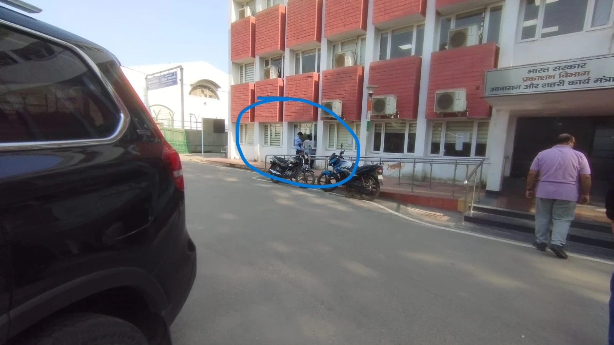
Carry debit/credit card , they dont accept CASH, or if you forgot Cards then go to the nearby xerox shop for generating bharathkosh tax recipt and attach that with the application.
Collect the gazette recipt and keep it safe. thats it, done!.
Checking and Waiting for Weekly Gazette Releases
Weekly Gazette releases are uploaded online. Publication may take multiple weeks depending on the submission method and processing time.
Visit: https://egazette.gov.in/
- Click on Gazette Directory
- Select List of Published Gazette
-
Use the following filters:
- Gazette Category: Weekly
- Part & Section: Part IV
- Year: Current Year
- Download the relevant PDF publication
-
Open the PDF and use the Find/Search feature
(
Ctrl + F) -
Search for:
gender as - This helps locate gender and name change notifications inside the Gazette PDF.
Final Gazette Notification Usage
Print the relevant 2 Gazette pages containing your notification.
Self attest the printed pages and attach passport size photograph where required for future document updates.
Document Generator
The generator creates all required documents in PDF and DOCX format.
There is also an offline version available for privacy-focused users.
Start Document Generator (OFFLINE VERSION ALSO AVAILABLE)→Support This Project 🙏
This website is independently built and maintained by a trans person trying to make Gazette procedures easier, safer and more accessible for everyone.
If this tool helped you save money, avoid agents, reduce confusion or navigate the process more easily, please consider supporting the project.
Support Me / Donate →